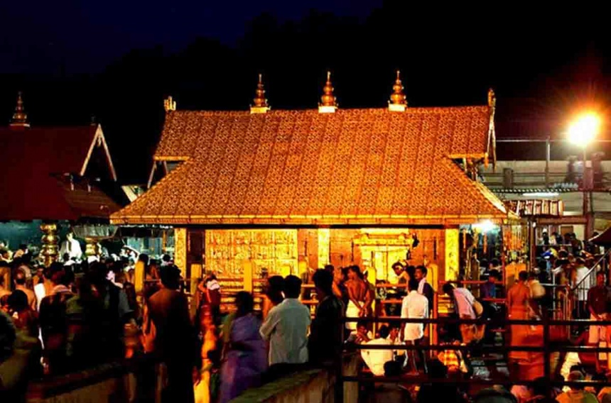
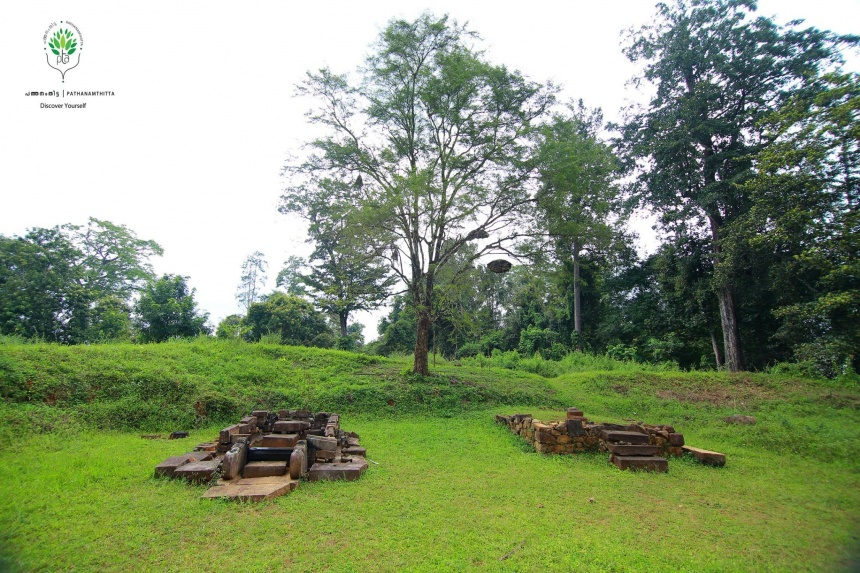
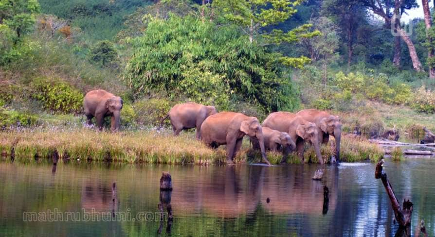
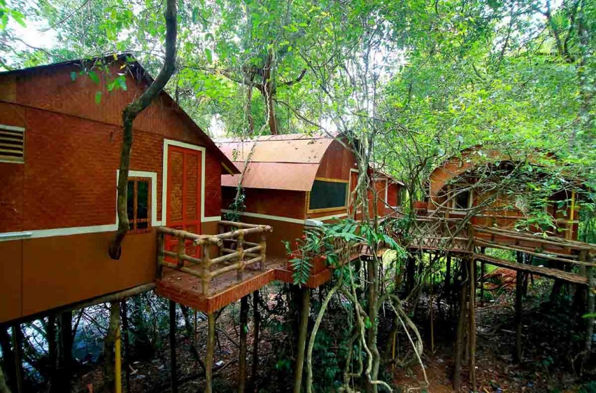
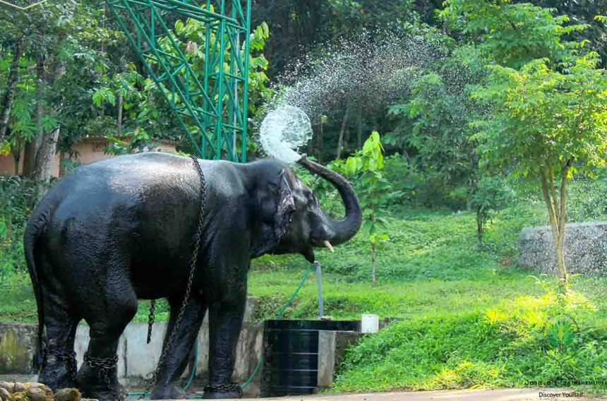

TOP DESTINATIONS
-

Pilgrim Tourism
The smallest of Kerala districts, situated in the southern region of Kerala, Pathanamthitta has nearly half of its total area under forest cover. It is the pilgrim center of Kerala, renowned for the shrine of Lord Ayappa in the Sabari Hills, drawing millions of devotees from near and far off places. The district also is known as a center for experiencing and learning some of the cultural as well as traditional practices of Kerala. Kollam, Kottayam and Alappuzha form the adjoining districts of Pathanamthitta.
-

Kurichi
The smallest of Kerala districts, situated in the southern region of Kerala, Pathanamthitta has nearly half of its total area under forest cover. It is the pilgrim center of Kerala, renowned for the shrine of Lord Ayappa in the Sabari Hills, drawing millions of devotees from near and far off places. The district also is known as a center for experiencing and learning some of the cultural as well as traditional practices of Kerala. Kollam, Kottayam and Alappuzha form the adjoining districts of Pathanamthitta.
-

Gavi
Gavi is a village in Pathanamthitta district , Kerala, India. It is located 28 km southwest of Vandiperiyar, a town in Idukki on N.H 220, the highway connecting Kollam and Madurai. Spread across the beauty of Periyar Tiger Reserve, Gavi is a quiet, beautiful and pristine forest haven. It is at the eastern extreme of the Pathanamthitta District at 3400 ft above MSL. These evergreen forests are abundant with magnificent Wildlife including the tiger, elephants, leopards, bears, Indian gaur, sambar, barking & Mouse deers, lion tailed macaque, other varieties of Kumarakom-bird Sanctuarymonkeys, Nilgiri Marten and a lot more.
-

Adavi
Enjoy a bowl boat riding or coracle rafting at Adavi Eco-tourism near Konni in Pathanamthitta. The Adavi Eco-tourism project is jointly launched by the departments of Forest and Tourism is part of the third phase of Konni Eco tourism project. A picturesque forest patch, 10 km from Konni on the banks of river Kallar, Adavi has nearly 5-km river frontage. Coracle rafting or Bowl Boat riding is an innovative venture, which promises a never-before experience to travellers.
-

Konni
Konni, a forested village in the State of Kerala in South India, situated on the bank of the mighty Achencoil River has a long and rich history of man-forest interface. Vast expanse of forests of Western Ghats in the background is crisscrossed by numerous streams and rivulets, which add to the exceptional scenic beauty of the landscape. The forests, repository of rich biodiversity were constituted in to Konni Reserve Forests and Achencoil Reserve Forests by the Maharaja of Travancore way back in 1897 and 1901 respectively, which are among the oldest reserve forests in the State.